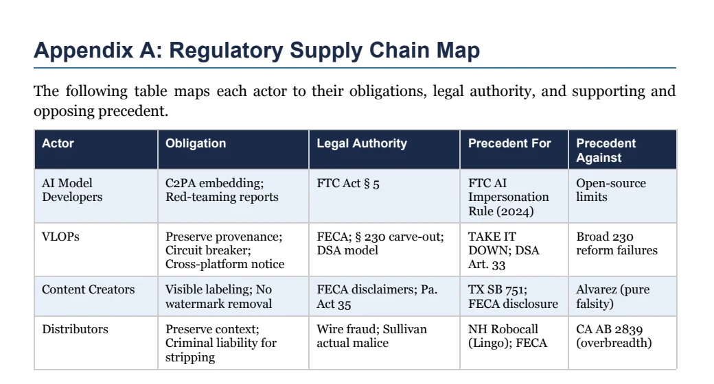
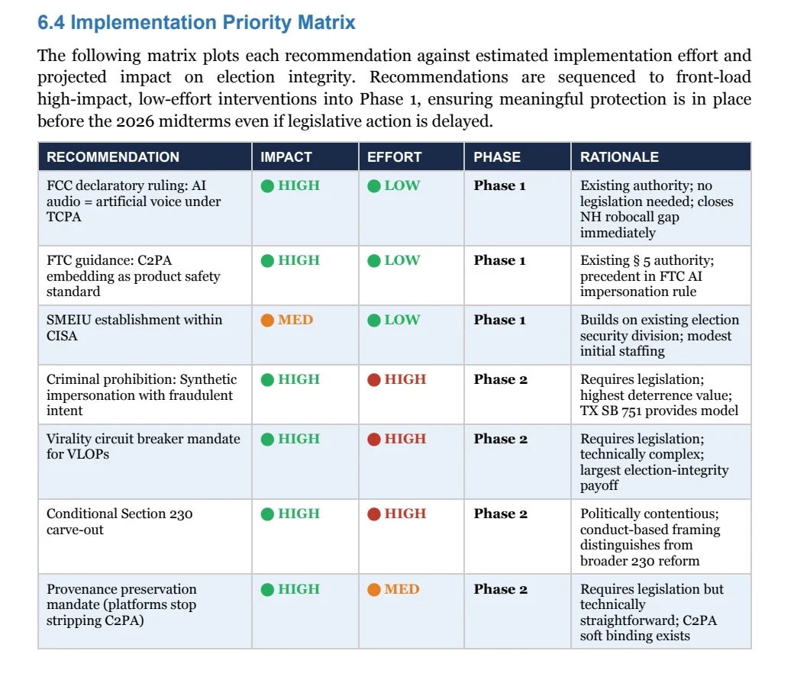
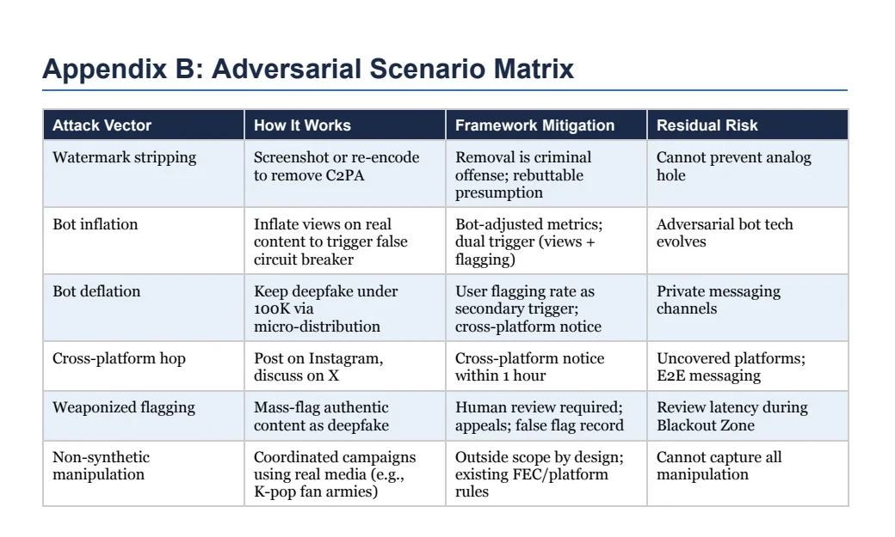

U.S. AI Policy Competition · 2026
Election integrity · synthetic media
SEAL IT: a federal framework for synthetic election media
Our proposal addresses a difficult policy question: how can the United States reduce the harm caused by election deepfakes while preserving political speech? We proposed slowing algorithmic distribution while suspicious content is reviewed.
Role
Policy researcher and co-authorwith Simi Olusola-Ajayi
Project type
Federal AI policy proposal
Deliverables
Policy brief, Senate memo, and deck
Recognition
First placedeepfakes and elections track
01 · The brief
Hackathon brief
Simi Olusola-Ajayi and I developed SEAL IT for the U.S. AI Policy Hackathon, a national competition hosted by the Berkeley AI Safety Initiative. The competition brought together 77 teams and 144 participants across three policy tracks. Our proposal won first place in the Deepfakes and Election Integrity track.
Policy question
How should the United States regulate AI-generated deepfakes to protect democratic processes while preserving First Amendment protections?
02 · The problem
The deepfake challenge
A deepfake is an image, audio recording, or video created or altered with AI to depict a fabricated event or statement. During an election, a convincing fake can reach voters while campaigns, journalists, and election officials are still trying to determine whether it is real.
Creation and distribution roles
- AI companies build the tools used to create synthetic media.
- Content creators decide what to make and how to present it.
- Platforms host the content and decide when to recommend it to more people.
- Users encounter, interpret, and share it.
Gaps in federal coverage
States including California and Texas have passed laws for election-related deepfakes. At the federal level, existing election, fraud, telecommunications, and platform rules address different actions. This can leave gaps between the person who makes a deepfake, the platform that recommends it, and the people who redistribute it.
Algorithmic distribution
Political speech receives strong First Amendment protection. A broad ban on false political content would raise serious constitutional concerns and could sweep in satire, parody, and criticism. Our proposal therefore focuses on a narrower intervention: platforms temporarily stop recommending a suspicious post to new audiences while they check it. The post remains available through direct links and follower feeds during review.
03 · Our proposal
The SEAL IT framework
SEAL IT creates a short review period during a defined federal-election window. It also requires useful information about a file’s origin to travel with the file and gives each actor a clear responsibility.
-
1
Media origin records
- Public AI tools attach a tamper-evident record, called a C2PA content credential, to the media they create.
- Platforms keep that record attached when media is uploaded or shared.
- AI companies test how their tools could be misused before each federal election cycle and publish what they find.
-
2
Recommendation pause
- A circuit breaker pauses algorithmic recommendations while qualifying content is reviewed.
- Direct links and follower feeds continue to provide access.
- Other large platforms receive an alert and conduct their own review.
-
3
Shared responsibility
- Creators disclose synthetic election media depicting real political candidates.
- Platforms keep information about where the media came from and begin review when a post reaches the threshold.
- Large distributors are responsible when they deliberately remove a disclosure or keep amplifying covered content after receiving notice.
Defining the policy’s scope
Defining a deepfake
The proposal uses a five-part test. Every element must apply before synthetic election media enters the enforcement framework.
Five-element test
Covered synthetic media
A realistic synthetic depiction used in connection with a federal election without a clear disclosure.
All five elements must be established. Satire, parody, clearly labeled synthetic content, and ordinary editing remain outside the test.
Required elements
- Synthetic: generated or materially manipulated by computational means.
- Depiction: shows a real, identifiable person or a fabricated persona presented as real.
- Disclosure: lacks a clear notice that it is synthetic.
- Deception: would lead a reasonable person to believe the depicted event occurred.
- Election connection: distributed in connection with a federal election.
The enforcement provisions add an intent standard for fraudulent impersonation or voter deception.
04 · What platforms do
Platform review process
A platform starts the process only when a post is spreading quickly and an automated system or user report indicates that it may be synthetic.
- Coverage window
- Defined federal-election period, with faster review during the final 48 hours
- Covered platforms
- 45 million or more monthly active users in the United States
- When review begins
- Rapidly spreading content and credibility-weighted flags from at least 3% of engaged users
- Review deadline
- 24 hours; 6 hours during the final 48 hours before polls open
Threshold rationale
- The user-driven trigger avoids asking a government agency to select political claims for review.
- Credibility weighting and network checks reduce the influence of new accounts, botnets, and coordinated mass reporting.
- The platform-size threshold concentrates the duty on services with broad reach and the capacity to conduct rapid review.
Pilot questions
- Does a 3% flag threshold identify fast-moving risk without producing excessive false alarms?
- Can platforms complete review within 24 hours, and within 6 hours during the final pre-election period?
- How often do automated, cross-partisan, and expert review stages disagree?
- 01
Flag
The post reaches the distribution threshold and an automated system or user report indicates that it may be synthetic.
- 02
Recommendation pause
The platform stops placing the post in trending feeds, suggested content, and similar recommendation surfaces.
- 03
Tiered review
The platform checks authenticated source material, cross-partisan user signals, and expert review for the most disputed cases. Reviewers apply the five-element test and examine the media’s origin record.
- 04
Decision
If the post is cleared, recommendations resume. If it is synthetic, the platform adds a label. Evidence of deliberate voter deception is sent to the relevant election authority.
- 05
Appeal
The creator can appeal the decision, and the platform must respond within 24 hours. Judicial review remains available.
Purpose of the pause
- Authentication can still affect how many additional voters encounter the media.
- Information attached to the file helps reviewers understand where it came from and whether it was changed.
- A fixed review period creates a decision that platforms and regulators can later examine.
05 · Who does what
Responsibilities across the media supply chain
The proposal divides responsibility across the media supply chain. Each group is responsible for the decisions it can directly control.
Responsibilities
- AI model developers: attach C2PA content credentials and publish the results of election-focused safety tests.
- Very large online platforms: keep origin information attached, run the review process, and alert other covered platforms.
- Content creators: visibly disclose covered synthetic depictions of political candidates.
- Distributors at scale: preserve disclosure and context during redistribution.
Enforcement
- FTC rules against unfair or deceptive practices
- FEC rules for election communications and disclosures
- A narrow limit on platform immunity when a platform knowingly continues covered amplification
- Civil and criminal penalties for deliberately deceiving voters

06 · Putting it into practice
Implementation roadmap
- 0–6 months
Agency action
The FTC issues guidance on origin information, the FCC clarifies its rules for synthetic voice calls, and CISA creates an election unit focused on synthetic media.
- 6–18 months
Federal legislation
Congress establishes the review process, the duty to keep origin information attached, rules for platform responsibility, and an offense for deliberate synthetic impersonation.
- 12–24 months
Review standards
NIST develops common review standards. Federal agencies create a certification process for platforms and coordinate their work.
- 18+ months
Policy review
Agencies study whether the rules should also cover search engines, messaging services, emerging platforms, and autonomous agents.

07 · Testing the proposal
Safeguards and evaluation
Misuse safeguards
- Coordinated flagging: credibility weighting and network analysis reduce the influence of botnets and brigading.
- Detection bias: annual audits, recalibration, and public reporting make differential error rates visible.
- Political misuse: activation records, a separate appeals team, and judicial review support contestation.
- Open-source generation: distribution-stage duties cover media produced outside commercial model providers.
- Cross-platform movement: a one-hour notice protocol gives other covered platforms an earlier signal.
Pilot measures
- Review latency and reviewer capacity during peak election periods
- False-positive and false-negative rates across media formats
- Differential error rates across demographic groups
- Appeal frequency, reversal rates, and resolution time
- Changes in algorithmic reach during the review window
- Evasion through watermark removal, private messaging, or smaller platforms

Selected legal context
- C2PA: Content Credentials technical standard ↗
- Congressional Constitution Annotated: false statements and the First Amendment ↗
- Congressional Research Service: AI and campaign finance policy ↗
- California AB 2655: Defending Democracy from Deepfake Deception Act ↗
- Texas SB 751: election-related deepfake video ↗
Project status
This work develops a federal policy proposal and implementation framework. Pilot testing and legal review would establish how its thresholds, procedures, and safeguards perform in practice.
Conclusion
A bounded pause for verification
SEAL IT gives platforms time to check suspicious media before recommending it to more voters. The proposal combines a clear definition, information about where media came from, a temporary pause in recommendations, specific duties for each actor, and an appeals process. A pilot and legal review would test the thresholds, review times, error rates, and effects on reach.